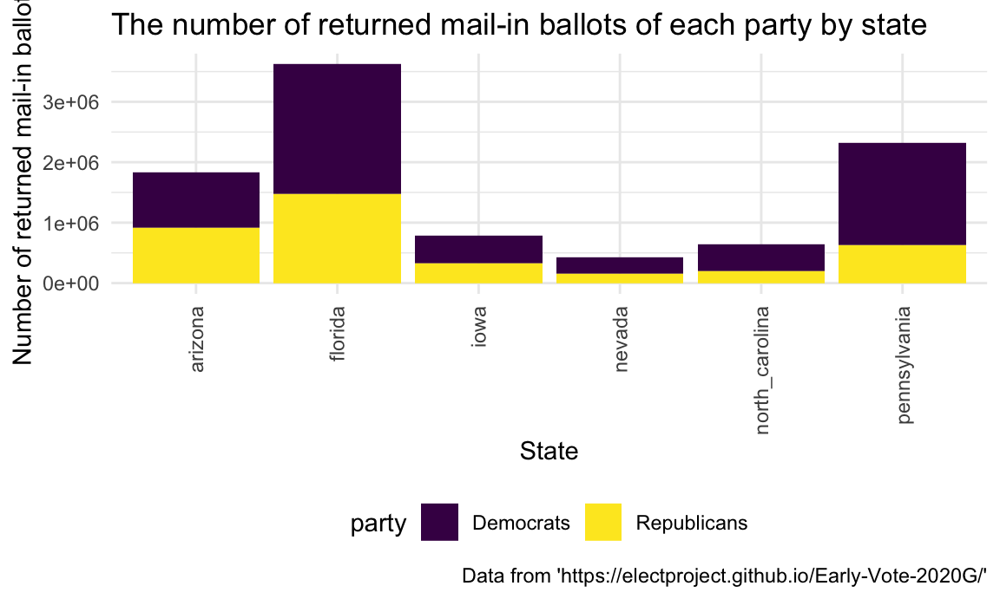
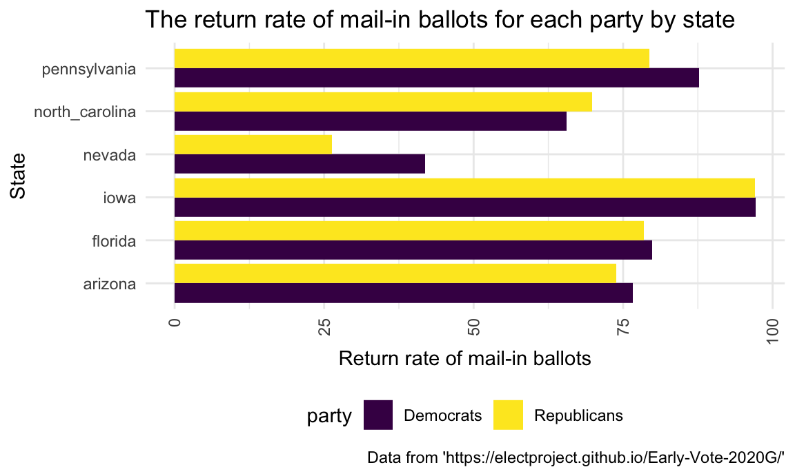
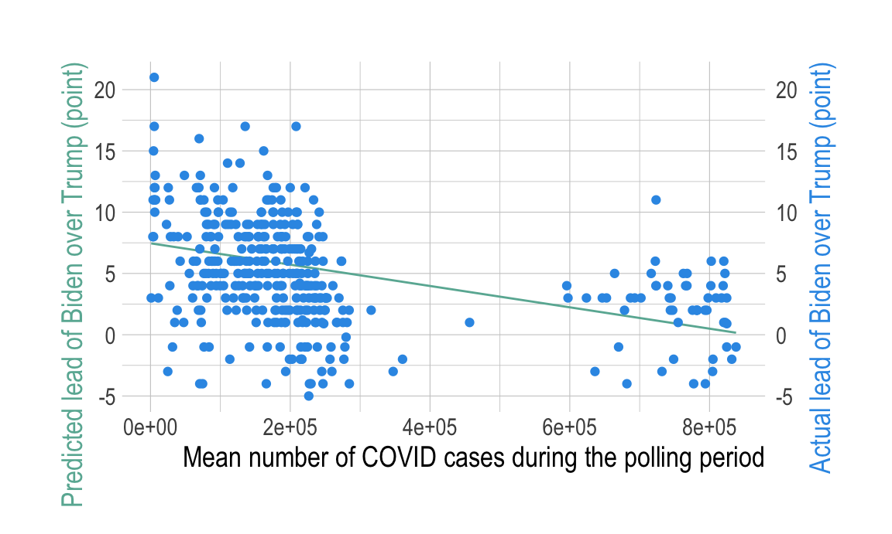
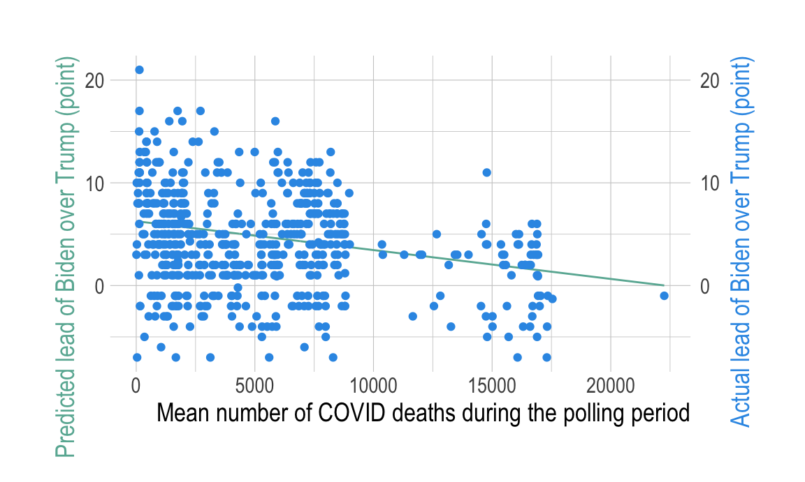

Ziyin Lu (zl2861), Yuanming Mao (ym2770), Yike Zhao (yz3738), Clare Qian (xq2197), Sherry Yan (my2644)
In a pre-election poll, only 37% of Americans said the country is on the right track.
In the 2020 presidential election, COVID-19 has been one of the key issue directing people’s choice.
Among those who considered coronavirus pandemic as the most mattered issue, 81% voted Biden while only 15% voted Trump.
However, there is also report stating that in places where the virus is most rampant now, Trump enjoyed enormous support.
Many voters who voted Trump 2016 said they are turning to Biden this year
Initially, we would like to focus on all states. But as our project progressed, we found it would be more meaningful to only focus on swing states.
Therefore, in this analysis, we focused primarily on top battleground states, including Florida, Pennsylvania, Wisconsin, North Carolina, Michigan, Ohio, Minnesota, Iowa, Arizona, Nevada, Texas, Georgia, Virginia, New Hampshire, Maine,Colorado and New Mexico.
Targeting these states, we aimed to answer the following questions:
What is the time trend of COVID-19 statistics and presidential poll in 2020?
How COVID-19 is correlated with presidential supporting rate in 2020?
How is democrats / republican supporting rate in 2020 compared to 2016?
Is there any distribution worth noting among mail-in vote?
Our analysis based on the following data source:
All presidential poll by states were read and then selected by CSS selector. Relevant tables were scraped as tibbles with map and function statement. The supporting rate (biden and trump), spread (spread), poll period (start_date and end_date) and poll agent (poll) were selected. All date was transformed to date format in R for later analysis. spread was further transformed into biden_lead to represent the difference between the supporting rate of Biden and Trump.
Variables
state: The battbleground state name
poll: The poll agent
start_date: The start date of the poll survey period
end_date: The end date of the poll survey period
biden: The supporting rate(%) of Mr.Biden
trump: The supporting rate(%) of Mr.Trump
biden_lead: The difference of supporting rate (%) between Biden and Trump. Positive number indicates Biden over Trump while negative number indicates Trump over Biden
Mail-in vote data was scraped using Xpath statement. Mail ballots returned and accepted by party registration are used in our analysis. Some battleground states did not report the mail-in statistics. Therefore, only Florida, Pennsylvania, North Carolina, Iowa, Arizona and Nevada were included in related analysis.
Variables
state: The battleground state name
party: Category variable of supporting party including: Democrats, Republicans, Minor, No Party Affiliation and Total
requested_ballots: The number of ballots that have been requested
returned_ballots: The number of ballots that have been returned
return_rate: The rate of returned ballots over requested ballots
freq_distribution: The corresponding frequency (%) of each party
COVID-19 data was scraped using API. Date, positive and probable cases, total test results, death, as well as positive test results and deaths increased for each day and each state are included in the final dataframe. Total case number was calculated, as defined in the website, as the sum of positive test results and probable cases.
Variables
state, date, positive, probable_cases, total_test_results, death, positive_increase, death_increase, data_quality_grade
state: The battleground state name
date: Date on which data was collected by The COVID Tracking Project
positive: The number of positive test results reported by the state
probable_cases: Total number of probable cases of COVID-19 as reported by the state. A probable case is someone who tests positive via antigen without a positive PCR or other approved nucleic acid amplification test (NAAT), someone with clinical and epidemiological evidence of COVID-19 infection with no confirmatory laboratory testing performed for SARS-CoV-2, or someone with COVID-19 listed on their death certificate with no confirmatory laboratory testing performed for SARS-CoV-2.
total_case : Total number of test positive plus probable cases of COVID-19 reported by the state or territory
death: Total fatalities with confirmed OR probable COVID-19 case diagnosis
positive: The number of positive test results reported by the state
probable_cases: Total number of probable cases of COVID-19 as reported by the state. A probable case is someone who tests positive via antigen without a positive PCR or other approved nucleic acid amplification test (NAAT), someone with clinical and epidemiological evidence of COVID-19 infection with no confirmatory laboratory testing performed for SARS-CoV-2, or someone with COVID-19 listed on their death certificate with no confirmatory laboratory testing performed for SARS-CoV-2.
total_case : Total number of test positive plus probable cases of COVID-19 reported by the state or territory
death: Total fatalities with confirmed OR probable COVID-19 case diagnosis
0dad4b095deb4309da429d82c02ec7bcec1b7a33 *
positive_increase: The daily increase in positive cases (confirmed plus probable) calculated based on the previous day’s value
death_increase: Daily increase in death, calculated from the previous day’s value.
data_quality_grade: The COVID Tracking Project grade of the completeness of the data reporting by a state
We use shinyapps.io to visualize the time trend of the supporting rate of Joe Biden and Donald Trump in the US Elections 2020 and the total confirmed covid-19 cases in the 17 swing states. For supporting rates, we construct a scatter plot with lines connecting the points to show the overall trend across the whole time period. Since our data consists supporting rates estimated by different poll, we take the mean of their results to present in our plot. For Covid19 confirmed cases, we use a bar chart to show present the total cases of each day, plotly helped in also showing the number of death and number of positive cases respectively. Both the two plots have the same scale of time that can be adjusted by selecting the date range. The data of total confirmed covid19 cases are not available for New Mexico, New Hampshire, Iowa, Nevada, Texas and Georgia, therefore, there will be no plot of covid19 cases for these states. Overall, Biden has averagely higher supporting rates than trump, the number of Covid19 cases seemed to have little impact on the supporting rates of either candidate.
We observed that in each of the battleground states, the difference between Democratic supporting rate and Republican supporting rate has increased, except Florida and Ohio. This result represents that the extent of how much the Democrat led has increased in 15 of the 17 key states.
In 2016, 7 of the 17 battleground states have the Democratic supporting rates higher than the Republican supporting rates. In 2020, 12 of the 17 battleground states have the Democratic supporting rates higher than the Republican supporting rates. We observed that in each of the battleground states, the difference between Democratic supporting rate and Republican supporting rate has increased, except Florida and Ohio.
knitr::kable(table_df)| state | dem_rep_difference_16 | dem_rep_difference_20 |
|---|---|---|
| arizona | -3.5 | 0.3 |
| colorado | 4.9 | 13.5 |
| florida | -1.2 | -3.3 |
| georgia | -5.1 | 0.3 |
| iowa | -9.5 | -8.2 |
| maine | 2.9 | 8.7 |
| michigan | -0.3 | 2.8 |
| minnesota | 1.5 | 7.2 |
| nevada | 2.4 | 2.7 |
| new_hampshire | 0.3 | 7.2 |
| new_mexico | 8.3 | 10.6 |
| north_carolina | -3.7 | -1.3 |
| ohio | -8.1 | -8.2 |
| pennsylvania | -0.7 | 1.2 |
| texas | -9.0 | -5.8 |
| virginia | 5.4 | 9.4 |
| wisconsin | -0.7 | 0.7 |
Overall, Democrat’s mail-in ballots has higher return rate over Republican’s return rate, except for the state of North Carolina, where Republicans have slight advantage of 69.8% while Democrats have 65.5%.
According to the bar plot, Democrat’s candidate Joe Biden, had dominant votes over Republican’s candidate Donald Trump, for the returned mail-in ballots in all 6 swing states. In particularly, Biden had absolute dominance over Trump for returned mail-in ballots in the state of Pennsylvania and Florida. We observed that return rate of mail-in ballots by parties in each of the swing states are often close to each other, except for the state of Nevada.
plot_returned_ballots
knitr::kable(tab_returnedballots)| state | Democrats | Republicans |
|---|---|---|
| florida | 45.3 | 31.1 |
| pennsylvania | 64.7 | 23.7 |
| north_carolina | 44.8 | 20.6 |
| iowa | 45.1 | 33.3 |
| arizona | 37.4 | 37.0 |
| nevada | 48.3 | 25.9 |
According to plot above, Democrat’s candidate Joe Biden, had dominant votes over Republican’s candidate Donald Trump, for the returned mail-in ballots in all 6 swing states. The frequency distribution further confirms these facts. In particularly, Biden had absulte dominance over Trump for returned mail-in ballots in the state of Pennsylvania and Florida.
plot_return_rate
knitr::kable(tab_returnrate)| state | Democrats | Republicans |
|---|---|---|
| florida | 79.9 | 78.5 |
| pennsylvania | 87.7 | 79.4 |
| north_carolina | 65.5 | 69.8 |
| iowa | 97.2 | 97.1 |
| arizona | 76.6 | 73.8 |
| nevada | 41.9 | 26.3 |
The table and bar chart above compared the return rates of both parties’ mail-in ballots in 6 swing states.
We observed that return rate of mail-in ballots by parties in each of the swing states are often close to each other, except for the state of Nevada, where Democrats have 41.9% return rate and Republicans have 26.3% return rate. Overall, Democrat’s mail-in ballots has higher return rate over Republican’s return rate, except for the state of North Carolina, where Republicans have slight advantage of 69.8% while Democrates have 65.5%.
In this part, we aimed to examine the relationship between COVID-19 case / death rate and presidential poll by different battleground states. Since the COVID-19 statistics was a longitudinal measurement over time, generalized estimating equations (GEE) model was used to account for correlated data within each battleground state.
We examined the effect of 4 variables on Biden’s lead over Trump:
mean_case the average number of incremental COVID-19 cases between the poll survey period
mean_death the average number of incremental COVID-19 death between the poll survey period
mean_pos_increase the average number of daily COVID-19 cases increased comparing to previous day between the poll survey period
mean_death_increase the average number of daily COVID-19 death increased comparing to previous day between the poll survey period
We tested 4 simple GEE models as below:
Biden lead = β0 + β1(COVID case)
_Biden lead = β0 + β1(COVID death)
Biden lead = β0 + β1(COVID case increase)
| term | estimate | std.error | statistic | p.value |
|---|---|---|---|---|
| (Intercept) | 5.237650 | 1.1076850 | 22.3583784 | 0.0000023 |
| mean_pos_increase | -0.000087 | 0.0001853 | 0.2202337 | 0.6388619 |
| term | estimate | std.error | statistic | p.value |
|---|---|---|---|---|
| (Intercept) | 5.3406376 | 1.0160723 | 27.627205 | 0.0000001 |
| mean_death_increase | -0.0109281 | 0.0055369 | 3.895373 | 0.0484193 |
We then conducted model diagnositc, and found that in both gee model of COVID-19 case and death, the residuals are approximately normally distributed.
Based on the regression analysis, we have concluded that:


According to our output time trend of the supporting rates between Joe Biden and Donald Trump in each of the swing states, Biden had averagely higher supporting rates than Trump across the whole time periods. The supporting rates of both the candidates slightly fluctuated but overall remained steady, no great decline or growth are shown, which indicates that both the candidates had their stable population of voters respectively in the swing states. Although Covid19 is one of the biggest public focus of 2020, the increase in Covid19 confirmed cases in the swing states didn’t seem to have much impact on the supporting rates of either the candidates.
In 2016, only 7 of the 17 battleground states were blue states, which supported the Democratic party. However, in 2020, 12 of the 17 battleground states were blue states. Five new blue states included Arizona, Georgia, Michigan, Pennsylvania, and Wisconsin. We observed an increase in the extent of how much Democrats led in 15 states. Only Florida and Ohio had their Republican supporting rates increased in 2020. Overall, we could figure out that since the Democratic party led in most of the battleground states in 2020, it is reasonable to predict and understand why the Democrats would win in the 2020 election.
Referring back to 2016’s election, Democrats obviously gained more support in swing states. Based on the analysis above, we have sufficient evidence to prove that the Democratic party led in all 6 swing states in terms of mail-in ballots. Moreover, return rates of mail-in ballots for both candidates often have small difference. We came to a reasonable interpretation of how Joe Biden became the president-elect of 2020’s election in the U.S.
Interestingly, Biden supporting rate decreased by increase of COVID-19 cases and death over time. In other word, Trump supporting rate was increasing. This may be due the “rally round the flag” effect.
“Rally round the flag” effect is when there is a short-term surge of voter approval of present nation leader during a crisis or emergency situation. One of the most well-known example is during the 9-11 terrorist attack in 2001. The approval rate of President George W. Bush increased by 39% (from 51% to 90%).
According to Dickinson (2020), the main reason for this effect is the presidents’ relatively unique position in the American political system. Presidents is the only individual embodiment of the nation besides the partisan position. Therefore, the president can benefit from his stature as political head of government when circumstances threaten the nation.
He also pointed out that voters who are less politically aware are more responsive to the “rally round the flag” effect, which may be the majority of battleground state voter. Those partisan members are more likely to be ideological.
During the 2020 COVID-19 pandemic, this effect was also observed in several other countries including Australia, Canada, Germany, Britain, India, France, etc.
The GEE regression model we built is relatively simple and we only considered four variables related to COVID status, so this regression analysis should be regarded as an initial and exploratory analysis to generate future hypotheses. Future investigations should consider other variables and potential confounders.